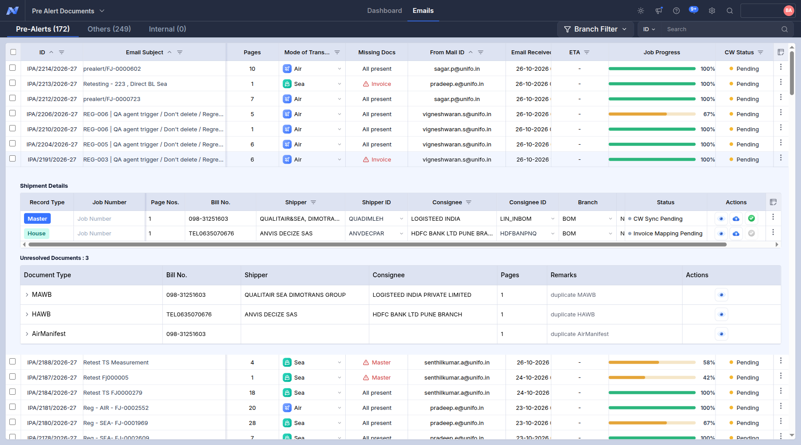
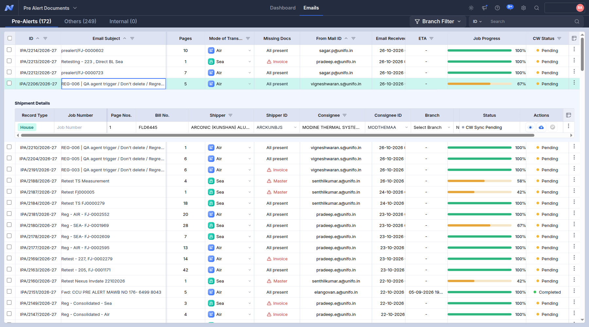
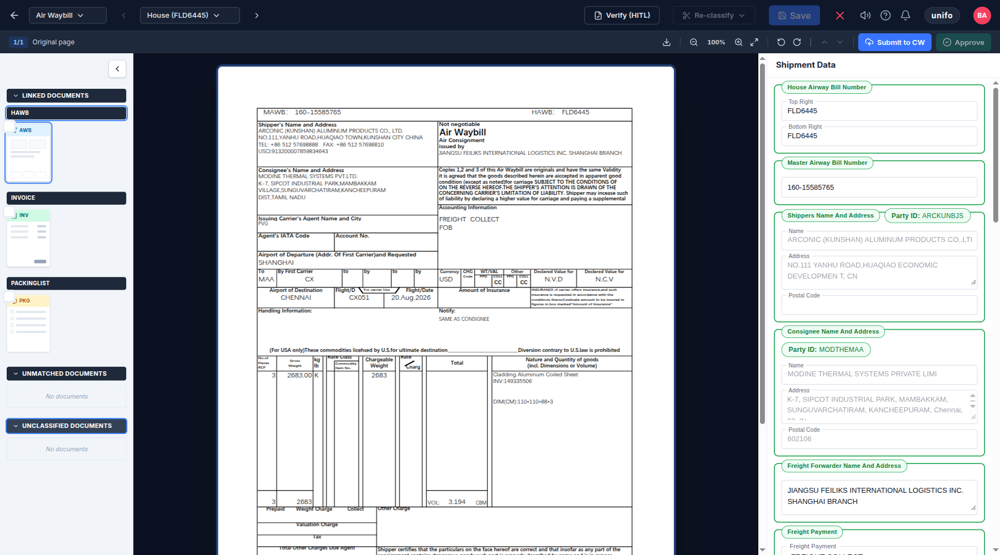
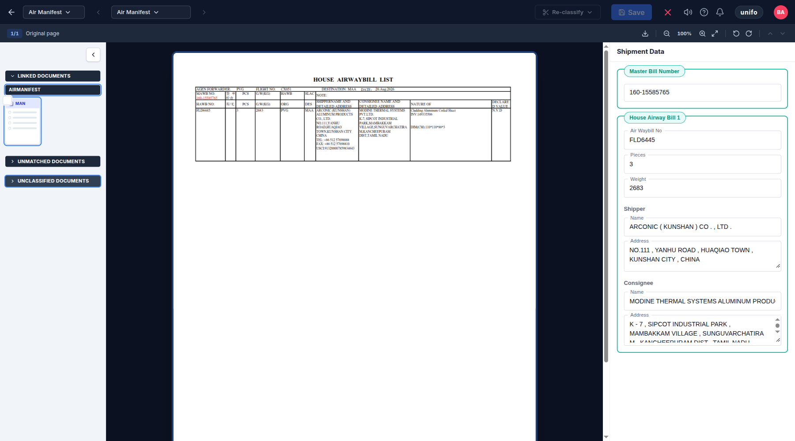
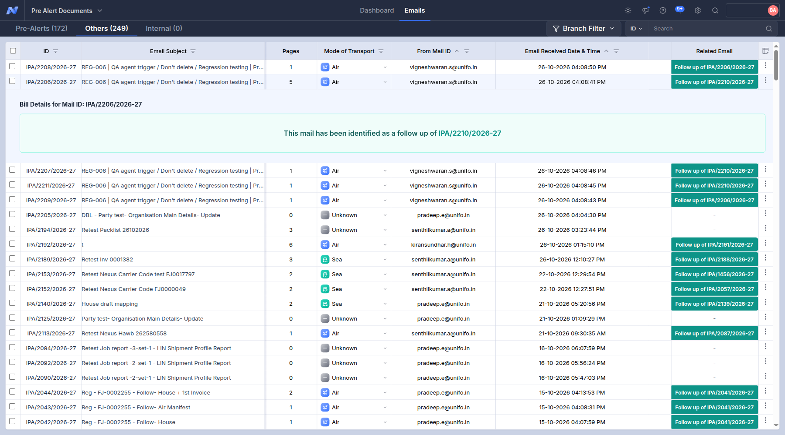

Trace of REG-006 - IPA-2206-2026-27 (6 screenshots, in the order they were taken)
Probable root cause
- The Master is not in IPA/2206/2026-27: it arrived as its own pre-alert (IPA/2210/2026-27). Emails of one shipment are grouped by arrival / reference of the email, not by the master number printed in the documents.
- Follow-up emails of this case went to the Others tab (IPA/2206/2026-27, IPA/2207/2026-27, IPA/2208/2026-27, IPA/2209/2026-27, IPA/2211/2026-27): they were not linked to the pre-alert.
- DEBIT NOTE not found anywhere in the pre-alert: look at the classification of the matching page (e.g. another type under the House).
01. Pre-Alerts tab: the row of this case (Pages, Missing Docs, Job Progress, CW Status)
01_prealerts_list.png
02. Pre-Alerts tab: the row of this case
02_list.png

03. Pre-Alerts tab, row expanded: Shipment Details (Master / House records, Bill No., status)
03_prealert_expanded.png

04. Viewer, parent House: Linked / Unmatched / Unclassified documents and the House data
04_parent_House.png

05. Viewer, parent Air Manifest: Linked / Unmatched / Unclassified documents and the Manifest data
05_parent_Manifest.png

06. Others tab: follow-up emails and duplicates of this case
06_others_tab.png
